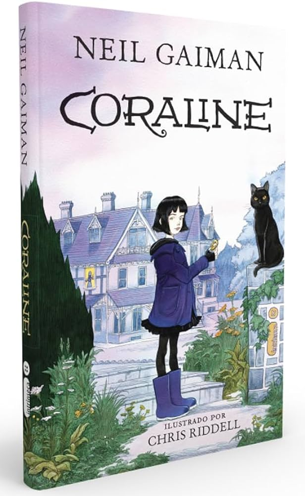

Editor - Darkside; 1ª edição (14 dezembro 2017) Idioma - Português Capa dura - 384 páginas

Marca- Darkside Número de páginas - 400 Peso do Produto - 700g Dimensões do Produto - Largura: 16cm, Altura: 23cm, Profundidade: 3cm

-
Traduzido por - Thelma Médice Nobrega Número de páginas - 176 Thema Ficção - geral e/ou literária Edição - 1° Ed.

-
Editora L± 1ª edição - Edição de bolso (1 novembro 1998) Idioma Português Livro de bolso 176 páginas
- 
-
Formato CAPA DURA Número de Páginas 224 Subtítulo CORALINE Editora INTRINSECA Autor NEIL GAIMAN